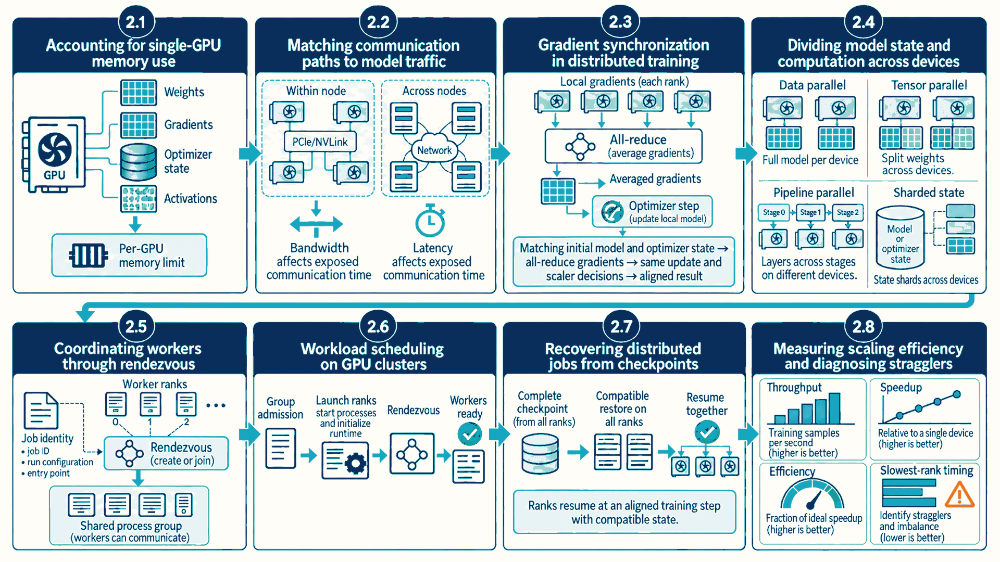
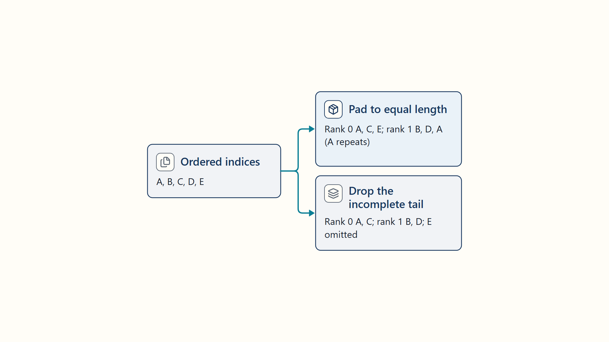
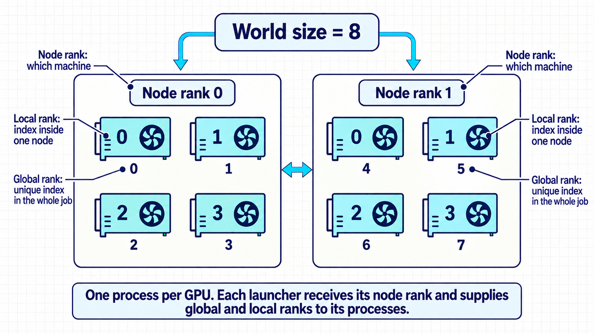

2 Distributed training across devices and clusters
How can one training job use many GPUs without turning communication, scheduling, or failure into the real bottleneck? Chapter 1 defined the versioned artifacts and software layers around a run. Single-GPU limits lead to network and process identities, then to recoverable distributed execution and measurement.
Chapter map: distributed cluster training
The sections answer four linked questions:
- 2.1–2.2: Which state does not fit on one device, and which links must carry the resulting traffic?
- 2.3–2.4: How do replicas synchronize updates, and how can state, layers, and activations be divided or reduced across devices?
- 2.5–2.6: How does the system identify and admit the full worker group?
- 2.7–2.8: Which checkpoint can restore the run, and which measurements reveal lost useful work?

2.1 Accounting for single-GPU memory use
A reproducible run can still be physically impossible on one device. Model state, optimizer state, and activations must fit before the run can finish in an acceptable time. The largest component that does not fit determines whether to shard state, split computation, or reduce activation memory.
Device: One accelerator visible to a training process, such as one NVIDIA GPU.
Server or node: One physical or virtual machine containing CPUs, host memory, storage interfaces, networking, and one or more devices.
One batch shows why training needs several kinds of memory. The model takes an input and produces a prediction in a forward pass. It compares that prediction with a known target, works backward to find how its adjustable numbers affected the error, then updates those numbers for the next batch. The objects in this cycle have distinct roles:
- Parameter (weight): An adjustable number in the model that changes during training.
- Loss: A number measuring the prediction against the target for this batch.
- Gradient: The rate at which the loss changes with a weight. Backpropagation computes it by working backward through the operations that produced the loss.
- Optimizer: An update rule that uses gradients, settings, and possibly saved state to change the weights.
- Activation: An intermediate layer output kept as needed for backpropagation and releasable after the step. For a separate update on the next batch, the training loop clears the previous gradients first. Deliberate gradient accumulation uses a different boundary.1
- Batch: The examples processed together before one model update.
- Micro-batch: A smaller part of a batch processed at one time to fit memory or flow through pipeline stages. Several micro-batches can contribute to one update.
For a small example, suppose a one-weight model multiplies input 3 by weight 2 and aims for target 7. Its prediction is 6, and the squared-error loss \((6-7)^2\) is 1. For squared error, the local loss-change rate with respect to the prediction is twice the prediction error, \(2(6-7)=-2\). The prediction changes by 3 times a small weight change because the input is 3. Backpropagation combines these two rates. The resulting weight gradient is \(-2\times3=-6\). The negative gradient means that a small increase in the weight lowers the loss locally. With plain gradient descent at learning rate 0.1, the optimizer changes the weight from 2 to \(2-0.1(-6)=2.6\). On the same input, its next prediction is 7.8 and loss is 0.64. This scalar example shows the order and effect of one update, not the arithmetic of Adam or evidence of generalization. Adam additionally keeps a running first moment of gradients and a second moment of squared gradients to choose its update.2 The weight, backward gradient, temporary activations, and Adam moments are distinct memory objects because they serve different moments of this cycle.
\[ M_{\mathrm{train}} ≈ P\left(b_w + b_g + b_{\mathrm{master}} + b_{\mathrm{opt}}\right) + A \tag{2.1}\]
\(M_{\mathrm{train}}\) is the estimated training-memory total, and \(P\) is the parameter count. The terms \(b_{\mathrm{w}}\), \(b_{\mathrm{g}}\), \(b_{\mathrm{master}}\), and \(b_{\mathrm{opt}}\) give bytes per parameter for weights, gradients, master weights, and optimizer state. \(A\) is activation memory in bytes. The persistent subtotal assumes one stated precision and optimizer layout. Temporary activations vary with the model and batch shape, so a profiler or shape-based estimate must add their memory after that subtotal. The following example assumes mixed-precision training: arithmetic uses a 16-bit number format, BF16, to reduce memory and bandwidth, while a 32-bit (FP32) master copy of each weight receives optimizer updates so small changes are less likely to round away. This is one possible layout, not a requirement of all mixed-precision training.3
Example: memory for an 8-billion-parameter model with Adam optimizer
This illustrative layout assumes BF16 weights and gradients, FP32 master weights, and two FP32 Adam moments. Sizes use decimal GB. Other mixed-precision implementations can use different persistent layouts:4
- Weights: Eight billion BF16 weights at 2 bytes each require 16 GB.
- Gradients: BF16 gradients add 16 GB.
- Master weights: Eight billion FP32 master weights at 4 bytes each add 32 GB.
- Adam state: Two FP32 moment buffers use 8 bytes per parameter and add 64 GB.
- Persistent subtotal: Weights, gradients, master weights, and Adam state total 128 GB before activations, temporary buffers, and allocator reserve.
- Activations: For illustration, 40 GB with a small micro-batch gives about 168 GB total, while 160 GB with a longer sequence or larger micro-batch gives about 288 GB. A profiler or shape-based activation estimate supplies the value for a real run.
- Scale: Repeating the same 16-bytes-per-parameter accounting gives persistent-state subtotals of 1.12 TB for 70 billion parameters and 6.48 TB for 405 billion. With illustrative activation allowances of 0.3–1.4 TB and 1.5–8 TB, the rough totals become 1.4–2.5 TB and 8–14.5 TB. These ranges are planning estimates, not fixed device-capacity requirements.
- Conclusion: A model with 8 billion parameters that is easy to load for inference can require multiple high-memory GPUs for ordinary Adam training.
The second limit is elapsed time. Data parallelism replicates computation over different input shards and synchronizes model updates. It can increase sample or token throughput when useful work outweighs communication and synchronization cost. At fixed global batch size this is a time-per-step comparison. Increasing global batch size can change convergence, so throughput alone does not establish time to a target quality. Model sharding addresses memory. Data replication addresses throughput. Large jobs often combine both.
2.2 Matching communication paths to model traffic
Memory accounting explains why multiple devices are necessary. Devices cannot cooperate until the system distinguishes physical links, the communication library, the framework API, and the parallelism strategy.
Distributed training uses four different kinds of technology:
- Physical fabric: PCIe, NVLink/NVSwitch, InfiniBand, RoCE, or Ethernet moves bytes between devices or nodes.
- Communication library (
backend): NCCL implements group communication operations on GPUs and selects supported transport paths5, while Gloo or MPI cover other process and data patterns. - Framework API:
torch.distributedcreates process groups and exposes collectives toPyTorchcode. - Parallelism strategy: DDP, Fully Sharded Data Parallel (FSDP), tensor parallelism, pipeline parallelism, context parallelism, or expert parallelism decides which state and computation are split.
Two communication terms recur through the rest of the chapter:
Collective operation: A group communication operation in which processes participate according to a shared rule. That rule determines which ranks contribute data and which receive results. For example, reduce returns a combined result to one destination rank, while all-reduce returns it to every rank.
All-reduce: A collective that combines one value from every process, usually by summation, and returns the combined result to every process.
NVLink is not NCCL. NVLink is a high-bandwidth GPU interconnect whose domain can span one or multiple servers.6 NCCL is a software library that may use NVLink, InfiniBand, RoCE, or sockets. torch.distributed is not a physical network either. It is the PyTorch API that requests collective operations from the configured backend.
| Connection type | Typical scope | Why placement matters |
|---|---|---|
| PCIe / NVLink / NVSwitch | High-bandwidth domain; NVLink can span multiple servers | Tensor-parallel communication can occur every layer and needs very high bandwidth. |
| InfiniBand / RoCE | Between servers | Data, pipeline, or context groups exchange gradients, activations, or KV state across nodes. |
| Ethernet sockets | Control or fallback data path | Functional for rendezvous and small transfers but often too slow for large synchronized tensors. |
Tensor parallelism splits each layer’s weight matrices across several GPUs, so those GPUs must exchange partial results inside every layer. The example below places one such group on fast links. Rank is each process’s unique integer identity within that group. Section 2.4 works through the matrix split.
Device placement example: placing a tensor-parallel group across fast interconnects
Placing frequently communicating ranks on faster links can reduce exposed communication time:
- Tensor payload: Four tensor-parallel ranks exchange layer outputs on nearly every transformer layer.7
- Fast local fabric: One server contains four GPUs connected through NVLink or NVSwitch, so the group remains inside that server.
- Across servers: In this simplified steady-state replicated-DDP example, the larger data-parallel group uses InfiniBand or RoCE for gradient synchronization. Initialization and buffer broadcasts also communicate, and sharded strategies additionally exchange parameters.
- Failure signal: If a tensor-parallel rank is placed across ordinary Ethernet, per-layer collective time can rise and delay downstream stages.
- Conclusion: Communication frequency and payload size determine which parallel group benefits most from the most suitable available link.
2.3 Gradient synchronization in distributed training
The communication stack now has distinct layers. The simplest scaling baseline is a full model replica on each device, with one consistent update shared across replicas. Each replica follows the Section 2.1 input, prediction, loss, and backward cycle on a different batch shard. It synchronizes the resulting gradients before its optimizer updates the weights.
- Distributed Data Parallel (DDP): A replicated-model strategy in which each process trains on a distinct batch shard and synchronizes gradients before applying the same optimizer update.
A DDP process owns one model replica and usually one GPU. A DistributedSampler assigns rank-specific indices. With its default drop_last=False, it pads uneven dataset sizes and can repeat indices across ranks. Setting sampler drop_last=True omits a tail instead. This policy differs from dropping a final incomplete DataLoader batch.8 During backpropagation, DDP groups parameter gradients into buckets and launches asynchronous all-reduce operations as soon as a bucket is ready.9 Overlap hides some communication behind the remaining backward computation.
\[ g_{\mathrm{global}} = \frac{\sum_{r=0}^{N-1} g_r}{N} \tag{2.2}\]
\(g_{\mathrm{global}}\) is the averaged gradient component used by every replica. \(g_r\) is rank \(r\)’s contribution, with \(r\) running from zero through \(N-1\). World size is the total number of participating processes in this group, denoted here by \(N\). This unweighted average assumes every rank contributes an equal-sized effective batch.
Example: gradient all-reduce across four ranks
Four participating ranks demonstrate all-reduce arithmetic. Each local value is one rank’s gradient contribution. The synchronized average becomes the optimizer input used by every rank:
- Local values: The same bucket component is 0.8, 1.2, 1.0, and 1.4 on ranks 0 through 3.
- Reduction: All-reduce sums the four values to 4.4.
- Average: Dividing by the world size, 4, produces a synchronized component value of 1.1.
- Update state: Every replica receives 1.1 before applying the optimizer step, and parameters remain aligned if initial model and optimizer states, update schedules, and scaler decisions also match.
- Conclusion: Distinct data shards may produce different local gradients. Synchronization makes the optimizer input identical on every replica.
The equation does not require every implementation to perform a literal gather followed by division. Ring, tree, or hierarchical collective algorithms can produce the same result with different communication schedules.10
\[ B_{\mathrm{ring}} ≈ \frac{2 \cdot \left(N-1\right)}{N} \cdot G \tag{2.3}\]
\(B_{\mathrm{ring}}\) is the approximate number of bytes one rank sends for the two ring phases, \(N\) is the number of ranks, and \(G\) is the gradient-bucket size in bytes. The same amount is received separately. Neither value is elapsed time or total bidirectional cluster traffic.
Example: ring all-reduce traffic for eight ranks
A ring all-reduce has two phases: reduce-scatter and all-gather. With N ranks, each phase sends (N - 1) / N of a bucket of size G. The factor of two counts both phases. The calculation below gives the bytes sent by one rank:
- Gradient bucket: The synchronized bucket is 1 GB.
- Rank count: Eight ranks participate.
- Traffic: 2 × (8 - 1) ÷ 8 × 1 GB = 1.75 GB sent per rank, with another 1.75 GB received per rank.11
- Interpretation: That transfer repeats for many buckets each step. Effective fabric bandwidth and overlap determine the exposed delay.
- Conclusion: A compute-light model can become communication-bound even when every GPU reports activity.

Code example: Abbreviated DDP sketch. The loader yields matching inputs and targets; uneven datasets can repeat indices under default sampler padding. The launcher supplies identities and training code initializes the group.
import os
import torch
import torch.distributed as dist
from torch.nn.parallel import DistributedDataParallel as DDP
from torch.utils.data import DataLoader, DistributedSampler
dist.init_process_group(backend="nccl")
local_rank = int(os.environ["LOCAL_RANK"])
torch.cuda.set_device(local_rank)
model = DDP(build_model().cuda(local_rank), device_ids=[local_rank])
criterion = build_criterion()
optimizer = build_optimizer(model.parameters())
sampler = DistributedSampler(dataset, shuffle=True)
loader = DataLoader(dataset, sampler=sampler, batch_size=micro_batch)
for epoch in range(epochs):
sampler.set_epoch(epoch)
for inputs, targets in loader:
predictions = model(inputs.cuda(local_rank))
loss = criterion(predictions, targets.cuda(local_rank))
loss.backward()
optimizer.step()
optimizer.zero_grad(set_to_none=True)Code walkthrough: PyTorch DDP training step
This abbreviated example assumes that the data loader yields matching inputs and targets, the model returns predictions, and the criterion returns one scalar loss. The distributed training loop then coordinates rank processes and gradient synchronization:
- Process group:
init_process_groupinitializes the training process group using identities and connection settings supplied by the launcher. - Device assignment:
LOCAL_RANKbinds this process and its model replica to one GPU on the node. - Data partition:
DistributedSamplerapplies the padding or dropping policy described above, andset_epochchanges the shuffle between epochs. Strict non-overlap requires an appropriate dataset-size and sampler policy. - Loss contract: The model turns
inputsinto predictions, and the criterion compares them withtargetsbeforeloss.backward()begins DDP gradient synchronization. - Synchronization point:
loss.backward()activates DDP bucket hooks, andoptimizer.step()consumes the reduced gradients after the required collectives finish. - Result: Ranks compute on their assigned indices and, under aligned optimizer state, apply the same synchronized update. Default sampler padding can repeat examples.
- Limits: The compact loop omits mixed precision, gradient accumulation, checkpointing, validation, failure handling, and a sampler configuration for uneven dataset sizes.
2.4 Dividing model state and computation across devices
DDP increases throughput when one full training replica fits on each device. When persistent state or activations exceed device memory, replication is the wrong baseline. The constrained memory object determines what is sharded, and the resulting communication is placed on the available topology.
The strategy options address progressively harder memory and sequence constraints:
- Zero Redundancy Optimizer (ZeRO): A staged model-state sharding method that first shards optimizer state, then gradients, then parameters across data-parallel ranks. At stage 3 (ZeRO-3), it and Fully Sharded Data Parallel (FSDP) shard parameters, gradients, and optimizer state, gathering parameter shards when the configured module or parameter group executes. FSDP2 resharding policy controls residency, and activation memory remains a separate cost.12
- Tensor parallelism: splits matrix operations across devices and communicates partial results within each layer.
- Pipeline parallelism places consecutive layer groups on stages and streams micro-batches through them.13
- Sequence parallelism partitions selected activation operations alongside tensor parallelism. Context parallelism distributes sequence positions and their attention work across devices. They are related but different settings in Megatron terminology.14
- Expert parallelism places the specialized sub-networks of a Mixture-of-Experts layer on different devices. A router selects a subset of these sub-networks, called experts, for each token.15
FSDP reduces replicated state but increases parameter communication. Tensor parallelism reduces per-device matrix state but adds frequent collective operations. Pipeline parallelism reduces layer residency but creates bubbles when stages wait. Context and expert parallelism add workload-specific routing and balance problems. Large runs combine strategies only after measuring the simpler baseline.
Tensor parallelism divides the arithmetic inside a layer. Consider a transformer feed-forward block whose first weight matrix has shape 4,096 × 16,384. With four-way tensor parallelism, each GPU stores a 4,096 × 4,096 column slice of that matrix and computes its slice of the intermediate output without talking to the others. The second matrix is split by rows, so each GPU produces a partial sum of the block’s output, and one all-reduce adds the four partial sums before the next layer.16 Each GPU therefore stores a quarter of the block’s weights, but the group communicates in every layer of every step. That frequency is why Section 2.2 keeps a tensor-parallel group inside one NVLink domain.
Pipeline parallelism divides the layers instead. Stage 1 runs the first group of layers, stage 2 the next group, and each later stage continues the sequence. Each global batch is cut into smaller micro-batches that flow through the stages. At the start of a batch, stage 2 cannot begin until stage 1 finishes the first micro-batch, and at the end, stage 1 is idle while later stages drain. Pipeline bubble is the idle time as a stage waits for work to arrive or later stages to finish.
\[ \beta_{\mathrm{bubble}} \approx \frac{p-1}{m+p-1} \tag{2.4}\]
\(\beta_{\mathrm{bubble}}\) is the fraction of the schedule in which a stage is idle, \(p\) is the number of pipeline stages, and \(m\) is the number of micro-batches per global batch. The approximation comes from the GPipe schedule and assumes equal stage times without communication delay.17 With 4 stages and 4 micro-batches, the bubble is 3 ÷ 7 \(\approx\) 43% of the schedule. Raising the count to 16 micro-batches reduces it to 3 ÷ 19 \(\approx\) 16%. For a fixed global batch, more micro-batches shrink the bubble, but each one is smaller and can lower per-kernel efficiency, depending on tensor shapes and kernels. The schedule must also hold activations for the micro-batches in flight. Schedules such as one-forward-one-backward (1F1B) interleave the passes to reduce that activation residency.
Activation memory has its own remedy. Activation recomputation, also called activation checkpointing, stores only selected layer inputs during the forward pass and recomputes the other activations when the backward pass needs them. It is unrelated to the training checkpoint of Section 2.7, which saves the whole run to storage. Recomputing every layer costs about one extra forward pass. Because a backward pass costs roughly twice a forward pass, the step’s arithmetic rises by about one third.18
Example: recomputation memory trade for the 8-billion-parameter model
This illustrative estimate returns to the longer-sequence case of Section 2.1, where activations used 160 GB across 32 transformer layers:
- Stored per layer without recomputation: 160 GB ÷ 32 = 5 GB of activations per layer.
- Stored per layer with full recomputation: Only the layer input remains, assumed here to be about 0.3 GB per layer, or about 9.6 GB for 32 layers.
- Working memory during backward: One layer’s activations are rebuilt at a time, adding about 5 GB, so the total is about 15 GB instead of 160 GB.
- Cost: The step performs roughly 4 ÷ 3 of its previous arithmetic. Section 2.8 excludes that recomputed arithmetic from useful model FLOPs. With unchanged hardware and other step costs, the extra work lowers useful model FLOPs per second even when the GPUs stay busy. A memory-limited run can gain a better batch shape, so the end-to-end result still needs measurement.
- Conclusion: Recomputation trades about a third more arithmetic for a large activation-memory reduction. It suits runs limited by activation memory, while persistent state still requires sharding.
| Condition | Initial strategy | Primary new cost |
|---|---|---|
| Model fits, training is too slow | DDP | Gradient all-reduce |
| Model barely misses one device | FSDP / ZeRO-3 | Parameter gather and reduce-scatter |
| Individual layers or matrices are too large | Tensor parallelism | Per-layer activation collectives |
| Layer stack is too large | Pipeline parallelism | Pipeline bubbles and activation transfer |
| Context dominates memory | Context/sequence parallelism | Attention communication and load balance |
| Sparse experts dominate model size | Expert parallelism | All-to-all token routing |
Example: four-rank ZeRO stages versus full replication
Sharding model states across ranks reduces per-GPU memory footprints in exchange for collective communication. In the Section 2.1 layout, each replica has 16 GB of weights, 16 GB of gradients, and 96 GB of FP32 master weights plus Adam moments:
- Replicated baseline: Four DDP ranks each hold the full 16 + 16 + 96 = 128 GB persistent-state subtotal.
- ZeRO-1: Shard the 96 GB of master weights and optimizer moments, leaving 16 + 16 + 96 ÷ 4 = 56 GB per rank.
- ZeRO-2: Also shard gradients, leaving 16 + (16 + 96) ÷ 4 = 44 GB per rank.
- ZeRO-3: Also shard weights, leaving 128 ÷ 4 = 32 GB per rank.19 FSDP-style full sharding follows this last placement pattern, though its exact residency depends on implementation and policy.20
- Full-sharding execution trace: In the ZeRO-3 or FSDP-style case, ranks gather the required parameter shards before one layer executes. After backward computation, reduce-scatter leaves each rank with its gradient shard.
- New constraint: Temporary all-gathers, activation memory, allocator reserve, and communication overlap still determine whether the run fits and performs well.
- Conclusion: These are ideal persistent subtotals, not device-capacity requirements. Each additional stage removes another kind of replication but changes the communication schedule or temporary residency.
2.5 Coordinating workers through rendezvous
A selected strategy describes state placement. Processes still need unique identities and a common group before they can exchange any tensor. Ranks and rendezvous form the process group before its configured backend carries collective traffic.
Local rank: The process index within one node, commonly used to select the local GPU.
Rendezvous: The control-plane handshake through which processes discover one another, agree on membership, and obtain group metadata.
torchrun starts processes and supplies LOCAL_RANK, RANK, and WORLD_SIZE.21 A store reachable through MASTER_ADDR and MASTER_PORT coordinates rendezvous. The training process initializes the collective group. NCCL communicator formation can be eager or lazy depending on the API arguments22, and the rendezvous store is not the channel carrying every gradient. The example below uses static launch settings, and ranks need not remain stable across elastic restarts.

Code example: Two-node torchrun launch definition for sixteen training processes.
torchrun \
--nnodes=2 \
--nproc-per-node=8 \
--node-rank="${NODE_RANK}" \
--master-addr="${MASTER_ADDR}" \
--master-port=29500 \
train.pyCode walkthrough: multi-node torchrun invocation
The launcher command-line tool coordinates cluster rendezvous and process rank binding:
- Cluster shape:
--nnodes=2and--nproc-per-node=8declare sixteen expected processes. - Node identity:
--node-rankgives each launcher a unique identity within the rendezvous. - Rendezvous endpoint: The master address and port identify the shared control endpoint used to form the process group.
- Injected state:
torchrunsupplies global rank, local rank, and world size to eachtrain.pyprocess. - Result: The launcher describes membership, the training program still initializes the process group and binds each local rank to a GPU.
- Limits: Both nodes share rendezvous settings, reachable networking, matching code and environment, and a scheduler allocation that starts the full group.
Rendezvous diagnosis: common causes of unresponsive distributed jobs
Process synchronization failures during initialization often appear as unresponsive jobs:
- A wrong rank count, unreachable master address, blocked port, or partially scheduled job often looks like a hang because processes wait for missing peers.
- Process identities and control-plane connectivity are the first checks because either can create a hang before
NCCLbandwidth becomes relevant.
2.6 Workload scheduling on GPU clusters
Rendezvous requires every expected rank to appear. A cluster scheduler that starts only part of a multi-node job can therefore consume GPUs while making no progress. A complete scheduling setup exposes devices, admits the full worker group together, and isolates resources.
- Gang scheduling: A policy that admits a configured minimum worker group together. It represents the complete job only when configured that way, and admission does not guarantee simultaneous application readiness.23
In the NVIDIA device-plugin setup described here, the host driver, container runtime integration, and device plugin expose nvidia.com/gpu to Kubernetes.24 A pod requests an integer device count, while labels and node affinity select the GPU family. GPU-node taints repel pods without matching tolerations. Admission policy should control which workloads receive those tolerations. The two code blocks below are separate conceptual fragments, not a deployable gang-scheduled job. The first describes ordinary Kubernetes Job workers. The second describes the minimum resources of a Volcano PodGroup. A working integration must select the Volcano scheduler for the worker pods and associate those pods with the intended PodGroup, or use a supported Volcano job controller that creates that relationship.25
Code example: Conceptual base Job worker resource fragment. It does not select Volcano or associate its pods with the separate PodGroup. Eight advertised units mean whole GPUs only in the assumed non-sharing configuration.
apiVersion: batch/v1
kind: Job
metadata:
name: ddp-worker
spec:
completions: 2
parallelism: 2
template:
spec:
restartPolicy: Never
tolerations:
- key: nvidia.com/gpu
operator: Exists
effect: NoSchedule
affinity:
nodeAffinity:
requiredDuringSchedulingIgnoredDuringExecution:
nodeSelectorTerms:
- matchExpressions:
- key: accelerator.fabric
operator: In
values: [nvlink]
containers:
- name: trainer
image: registry.example/trainer@sha256:...
resources:
requests:
nvidia.com/gpu: 8
limits:
nvidia.com/gpu: 8Code walkthrough: Kubernetes worker resource fragment
This base Job fragment declares worker resources but does not bind its pods to the separate PodGroup fragment:
- Replica state:
completionsandparallelismrequest two worker pods, but the base Job object does not give them distributed rank identities. - GPU admission: Matching request and limit values request eight advertised GPU resources for each worker. Interpreting these as eight whole GPUs assumes non-sharing device-plugin configuration.
- Placement permission: The toleration allows the worker onto nodes protected by the GPU taint, node labels or affinity would further constrain GPU type.
- Artifact identity: The image digest makes both workers execute the same immutable training environment.
- Result: The Job asks Kubernetes for two eight-GPU workers. On its own, it neither selects Volcano scheduling nor associates those pods with
ddp-two-node, so the displayed pair does not establish gang admission. - Missing binding: A supported, version-tested integration must set the worker pod scheduler to Volcano and attach both pods to the same PodGroup. Volcano’s documented controller examples can create and associate a PodGroup for a workload. This generic Job and a manually created PodGroup do not demonstrate that controller path.26
- Further limits: A complete deployment also needs worker indexing, service discovery, volumes, security context, retry policy, launcher configuration, and checks that all ranks actually join. Scheduling admission does not provide these.
Code example: Conceptual Volcano PodGroup resource fragment. The separate base Job does not bind its pods to this group or select Volcano scheduling. A supported integration is still required, and admission does not establish simultaneous application readiness.
apiVersion: scheduling.volcano.sh/v1beta1
kind: PodGroup
metadata:
name: ddp-two-node
spec:
minMember: 2
minResources:
nvidia.com/gpu: "16"For this two-worker example, the PodGroup minimum must represent both workers for all-or-nothing admission. That prevents the job from reserving one worker’s GPUs while waiting for the other. The launcher and application must still start each process, join the rendezvous, and handle later failures.
Volcano provides HPC-style gang scheduling, while Kueue adds queue and quota management around the default Kubernetes scheduler.27 SkyPilot abstracts resource provisioning across clouds and clusters.28 Slurm provides mature queueing and accounting29, Soperator runs the Slurm control plane on Kubernetes so Slurm manages jobs while Kubernetes manages pods and nodes.30
2.7 Recovering distributed jobs from checkpoints
Configured gang admission reserves the required worker group before startup. At cluster scale, hardware, network, process, and preemptible-capacity failures make a long uninterrupted run unlikely. The acceptable progress loss and recovery time determine checkpoint frequency, layout, and persistence.
Recovery Point Objective (RPO): The maximum amount of completed training progress the system may lose after a failure.
Recovery Time Objective (RTO): The maximum acceptable time between failure and resumed useful training.31
A resumable checkpoint includes model parameters, optimizer and scheduler state, step or epoch, precision-scaler state when used, and rank-specific random-number and data-position state when exact sample order matters. The application must supply this state and test format/version compatibility.32 DDP may let rank 0 save the unwrapped model, while sharded strategies require a compatible distributed-checkpoint format.
A fast path writes shards to host memory or local NVMe, returns GPU control quickly, and copies asynchronously to shared or object storage. Local media can survive some process or host restarts, but does not cover loss of that machine. Node-loss recovery is available only after the required durable remote copy completes.
A checkpoint helps only if a restore never picks up a half-written save. With dozens of ranks writing shards, a failure can leave some shards written and others missing. Section 3.4 specifies the storage protocol that prevents this: each save becomes a new, uniquely named generation, a coordinator verifies and restore-tests the complete set, and only then does it advance one durable pointer that restore jobs read.
Example: checkpoint interval from an average lost-work budget
This illustrative constraint calculation is not an optimization and does not establish an RPO:
- Run cost: Assume an illustrative price of $4 per GPU-hour for a 512-GPU job, or $2,048 per wall-clock hour.
- Allowed average lost work: The team accepts at most 15 minutes on average.
- Periodic-failure assumption: A failure is equally likely within one checkpoint interval, so average lost work is approximately half the interval.
- Cost of the budget: 15 minutes of lost work on 512 GPUs is 0.25 h × $2,048/h = $512 of compute per failure.
- Interval: To keep the average at 15 minutes, use a 30-minute useful-compute interval under the simplified assumption that failure occurs uniformly within useful computation, ignoring persistence lag and failures during saving. Worst-case lost work can approach the whole interval plus that lag.
- I/O check: A 4-minute synchronous save after 30 useful minutes consumes 4 ÷ 34 \(\approx\) 11.8% of the cycle. Asynchronous persistence is one option to reduce this pause, but its extra memory, background load, and durable-copy lag must be measured.
- Conclusion: Checkpoint frequency is an economic and recovery decision constrained by storage throughput.
2.8 Measuring scaling efficiency and diagnosing stragglers
A recoverable job can survive expected failure. It may still waste accelerators through data starvation, synchronization, pipeline bubbles, or unstable numerics. Useful-work measurements and training, GPU, and communication evidence localize the delay.
\[ \mathrm{MFU} = \frac{F_{\mathrm{observed}}}{F_{\mathrm{peak}}} \tag{2.5}\]
MFU (Model FLOPs Utilization) is the ratio of useful model forward/backward arithmetic rate \(F_{\mathrm{observed}}\) to the comparable aggregate dense hardware peak \(F_{\mathrm{peak}}\) at the run precision. Both rates use FLOPs per second. The ratio does not count rematerialization or identify the source of unused time by itself.
Example: Model FLOPs Utilization for an eight-GPU cluster
Comparing observed floating-point throughput against hardware peak quantifies compute efficiency:
- Observed work per token: For an illustrative model and training objective, the useful forward/backward model arithmetic estimate is 120 GFLOPs per processed token, excluding recomputation.33
- Measured throughput: The eight-GPU run processes 20,000 tokens each second.
- Observed rate: 20,000 tokens/s × 120 GFLOPs/token = 2.4 PFLOPs/s of model arithmetic.
- Relevant peak: Eight devices provide an assumed combined 8.0 PFLOPs/s dense peak at the run precision. The throughput window includes input and collective waits but excludes startup and checkpoint pauses in this example.
- Utilization: Dividing 2.4 by 8.0 gives 0.30, or 30% MFU.
- Diagnosis: The 70 percentage-point gap to peak may come from input wait, memory traffic, kernels, collectives, imbalance, or bubbles. It is not automatically communication loss.
- Conclusion: MFU quantifies the gap, while correlated timelines and counters identify where the lost time originates.
GPU utilization alone can be misleading because a device may report activity while waiting on memory or communication.34 Throughput, MFU, power draw, memory-bandwidth utilization, NVLink or InfiniBand traffic, step-time variance, and collective traces provide the comparison. A straggler slows every synchronized rank.
Timeline diagnosis: identifying straggler ranks
Analyzing per-rank execution phases exposes load imbalance across cluster workers:
- Ranks 0–6 finish input loading in 45 ms, while rank 7 takes 130 ms. All ranks then enter the same 70 ms all-reduce.
- In this illustrative timing model, the early ranks wait 85 ms and then transfer for 70 ms, so their collective spans last 155 ms. Rank 7 records only the 70 ms transfer. The unequal pre-collective gap identifies input or host work on rank 7 as the first cause to investigate.
The symptom table connects each visible training failure to the evidence and owner that can explain it.
| Symptom | Evidence to inspect | Likely component |
|---|---|---|
| All ranks hang before first step | Rank/world-size logs, rendezvous port, scheduler state | Launcher or scheduler |
| Throughput stops scaling | NCCL traces, fabric counters, compute/communication overlap | Communication topology or parallelism |
| GPU utilization high, power low | Memory bandwidth, data-loader time, collective wait | Input path or synchronization |
| Periodic idle stages | Per-stage timeline and micro-batch count | Pipeline-parallel schedule |
| Loss spikes or NaNs | Gradient norms, precision state, XID/ECC errors | Numerics or hardware |
| Resume fails | Checkpoint manifest, shard count, code/config identity | Checkpoint writer and artifact lineage |
Chapter 2 summary
Memory, communication, admission, and recovery set different limits on a distributed run:
- Core mechanisms: Data-parallel workers average gradients with an all-reduce before the optimizer step. State sharding reduces per-device memory while adding parameter communication. Tensor parallelism splits each layer and communicates inside it, pipeline parallelism splits the layer stack and loses time to bubbles, and activation recomputation trades extra arithmetic for activation memory. A rendezvous joins the expected worker group, and gang scheduling reserves that group together.
- Governing tradeoffs: More communication can keep model state within device memory, but it can also limit throughput when the network or all-gather path saturates.
- Failure modes & defenses: Complete checkpoints that contain the full training state and reach the required durable failure domain limit the progress lost under the selected save and recovery policy. Actual loss also depends on when failure occurs and whether the durable copy has completed. Group admission reduces wasted partial allocations but cannot prevent later failures or deadlocks.
Chapter checkpoint
Review Questions 4–10 in Appendix B, Section B.1, to test parallelism choice, gang scheduling, recovery objectives, and the memory, ring-traffic, pipeline-bubble, and MFU calculations before proceeding to storage.
Carry-forward result
The distributed run is now defined: versioned inputs start as one allocation, each rank receives indices under an explicit sampler padding or dropping policy, collectives produce consistent updates, checkpoints hold the full training state, and measurements show useful work.
Two storage questions remain open. The input path must deliver data fast enough to keep every GPU busy, and a partial checkpoint save must stay invisible to restore jobs. Chapter 3 answers both.
PyTorch Contributors. (2025, June 12). Automatic differentiation package: torch.autograd. PyTorch 2.8 documentation. Autograd. PyTorch Contributors. (n.d.). Optimizing Model Parameters. PyTorch Tutorials (observed 2.14.0+cu130). Training-loop tutorial. These official pages document backward gradients, saved forward state, gradient clearing, and optimizer stepping. The one-weight squared-error trace is an illustrative calculation, not a benchmark or a general optimizer result.↩︎
PyTorch Contributors. (n.d.). Adam. PyTorch 2.8 documentation. https://docs.pytorch.org/docs/2.8/generated/torch.optim.Adam.html. Adam’s documented update keeps first and second gradient moments. Optional settings such as AMSGrad change the state. The scalar trace uses plain gradient descent, not Adam.↩︎
Rajbhandari, S., Rasley, J., Ruwase, O., & He, Y. (2020). ZeRO: Memory optimizations toward training trillion parameter models (arXiv:1910.02054v3, May 13, 2020). arXiv. https://arxiv.org/abs/1910.02054v3. ZeRO Section 3.1 motivates mixed-precision model-state accounting. The listed 2+2+4+8 byte layout and activation numbers are explicit illustrative assumptions, not every BF16 Adam implementation.↩︎
Rajbhandari, S., Rasley, J., Ruwase, O., & He, Y. (2020). ZeRO: Memory optimizations toward training trillion parameter models (arXiv:1910.02054v3, May 13, 2020). arXiv. https://arxiv.org/abs/1910.02054v3. ZeRO Section 3.1 motivates mixed-precision model-state accounting. The listed 2+2+4+8 byte layout and activation numbers are explicit illustrative assumptions, not every BF16 Adam implementation.↩︎
NVIDIA. (n.d.). Overview of NCCL. NCCL user guide. https://docs.nvidia.com/deeplearning/nccl/user-guide/docs/overview.html. NCCL documents collective and point-to-point communication over supported interconnects. The physical link and framework API are separate layers.↩︎
NVIDIA. (n.d.). Overview. NVIDIA IMEX Service for NVLink Networks. https://docs.nvidia.com/multi-node-nvlink-systems/imex-guide/overview.html. NVIDIA IMEX documents multi-node NVLink domains. The four-GPU local-server placement remains only an example.↩︎
Shoeybi, M., Patwary, M., Puri, R., LeGresley, P., Casper, J., & Catanzaro, B. (2019). Megatron-LM: Training multi-billion parameter language models using model parallelism (arXiv:1909.08053). arXiv. https://arxiv.org/abs/1909.08053. Megatron-LM describes frequent intra-layer communication. Exact collectives and payloads depend on the layer partition rather than always exchanging full outputs.↩︎
PyTorch Contributors. (n.d.). torch.utils.data. PyTorch 2.8 documentation. https://docs.pytorch.org/docs/2.8/data.html#torch.utils.data.distributed.DistributedSampler. PyTorch 2.8 DistributedSampler documents default padding, drop_last, and set_epoch. The sampler controls indices, not all worker transforms or restart randomness.↩︎
PyTorch Contributors. (n.d.). Distributed Data Parallel. PyTorch 2.8 documentation. https://docs.pytorch.org/docs/2.8/notes/ddp.html. The PyTorch 2.8 design note describes ready-bucket reductions and overlap. Matching updates also require aligned model/optimizer state and update logic.↩︎
NVIDIA. (n.d.). Environment variables. NCCL 2.24.3 documentation. https://docs.nvidia.com/deeplearning/nccl/archives/nccl_2243/user-guide/docs/env.html. NCCL_ALGO documents multiple algorithm choices and automatic selection. Ring is not a mandatory DDP algorithm.↩︎
Rajbhandari, S., Rasley, J., Ruwase, O., & He, Y. (2020). ZeRO: Memory optimizations toward training trillion parameter models (arXiv:1910.02054v3, May 13, 2020). arXiv. https://arxiv.org/abs/1910.02054v3. ZeRO’s communication accounting supports ring reduce-scatter plus all-gather volume. This is sent volume and separately received volume, not measured elapsed time.↩︎
PyTorch Contributors. (n.d.). torch.distributed.fsdp.fully_shard. PyTorch 2.8 documentation. https://docs.pytorch.org/docs/2.8/distributed.fsdp.fully_shard.html. PyTorch 2.8 fully_shard documents parameter-group all-gather, gradient reduce-scatter, and reshard_after_forward. It is FSDP2-specific, not every FSDP1 policy.↩︎
Narayanan, D., Shoeybi, M., Casper, J., LeGresley, P., Patwary, M., Korthikanti, V. A., Vainbrand, D., Kashinkunti, P., Bernauer, J., Catanzaro, B., Phanishayee, A., & Zaharia, M. (2021). Efficient large-scale language model training on GPU clusters using Megatron-LM (arXiv:2104.04473v5). arXiv. https://arxiv.org/abs/2104.04473v5. Megatron-LM describes tensor/data/pipeline composition and pipeline bubbles on its tested clusters. It does not establish one optimal topology for all models.↩︎
NVIDIA. (n.d.). Parallelisms guide. Megatron Bridge documentation. https://docs.nvidia.com/nemo/megatron-bridge/latest/parallelisms.html. The Megatron Bridge guide distinguishes sequence parallelism from context parallelism. These are implementation-specific terms, not interchangeable switches.↩︎
Fedus, W., Zoph, B., & Shazeer, N. (2022). Switch Transformers: Scaling to trillion parameter models with simple and efficient sparsity. Journal of Machine Learning Research, 23(120), 1–39. https://jmlr.org/papers/v23/21-0998.html. Switch Transformers gives an original sparse expert-routing and load-balancing example. Other systems can select a different number of experts per token.↩︎
Shoeybi, M., Patwary, M., Puri, R., LeGresley, P., Casper, J., & Catanzaro, B. (2019). Megatron-LM: Training multi-billion parameter language models using model parallelism (arXiv:1909.08053). arXiv. https://arxiv.org/abs/1909.08053. Section 3 splits the first MLP weight matrix by columns and the second by rows so that one all-reduce completes the block in the forward pass. The matrix shape in the example is illustrative.↩︎
Huang, Y., Cheng, Y., Bapna, A., Firat, O., Chen, M. X., Chen, D., Lee, H., Ngiam, J., Le, Q. V., Wu, Y., & Chen, Z. (2019). GPipe: Efficient training of giant neural networks using pipeline parallelism. In Advances in Neural Information Processing Systems 32 (pp. 103–112). Curran Associates. https://proceedings.neurips.cc/paper/2019/hash/093f65e080a295f8076b1c5722a46aa2-Abstract.html. GPipe states a bubble overhead of order (K − 1)/(M + K − 1) for K partitions and M micro-batches, under equal partition cost. Real stage imbalance and communication change the measured value.↩︎
Korthikanti, V., Casper, J., Lym, S., McAfee, L., Andersch, M., Shoeybi, M., & Catanzaro, B. (2023). Reducing activation recomputation in large transformer models. In Proceedings of Machine Learning and Systems 5. https://arxiv.org/abs/2205.05198. The paper measures the overhead of full activation recomputation and introduces selective recomputation that keeps cheap-to-store activations. The one-third estimate is the standard forward/backward cost ratio, not a measured result for every model.↩︎
Rajbhandari, S., Rasley, J., Ruwase, O., & He, Y. (2020). ZeRO: Memory optimizations toward training trillion parameter models (arXiv:1910.02054v3, May 13, 2020). arXiv. https://arxiv.org/abs/1910.02054v3. ZeRO Section 3.1 motivates mixed-precision model-state accounting. The listed 2+2+4+8 byte layout and activation numbers are explicit illustrative assumptions, not every BF16 Adam implementation.↩︎
PyTorch Contributors. (n.d.). torch.distributed.fsdp.fully_shard. PyTorch 2.8 documentation. https://docs.pytorch.org/docs/2.8/distributed.fsdp.fully_shard.html. PyTorch 2.8 fully_shard documents parameter-group all-gather, gradient reduce-scatter, and reshard_after_forward. It is FSDP2-specific, not every FSDP1 policy.↩︎
PyTorch Contributors. (n.d.). torchrun (Elastic Launch). PyTorch 2.8 documentation. https://docs.pytorch.org/docs/2.8/elastic/run.html. PyTorch 2.8 documents the launcher environment and restart rules. Worker rank is not a durable identity across elastic restarts.↩︎
PyTorch Contributors. (n.d.). Distributed communication package: torch.distributed. PyTorch 2.8 documentation. https://docs.pytorch.org/docs/2.8/distributed.html. PyTorch 2.8 init_process_group documents device_id-triggered eager NCCL formation. No fixed post-return initialization order is promised.↩︎
Volcano Authors. (n.d.). Gang. Volcano documentation. https://volcano.sh/docs/scheduler/plugins/gang/. Volcano gang admission is governed by a configured minimum group. Startup, rendezvous, and later application failure are separate.↩︎
Kubernetes Authors. (n.d.). Schedule GPUs. Kubernetes documentation. https://kubernetes.io/docs/tasks/manage-gpus/scheduling-gpus/. The official GPU scheduling guide supports this setup. It is not a definition for all vendors, allocation interfaces, or sharing configurations.↩︎
Volcano Authors. (n.d.). Tutorials. Volcano documentation. https://volcano.sh/docs/gettingstarted/tutorials/. The current VolcanoJob example sets
schedulerName: volcanoandminAvailable, while its Deployment example uses a workload annotation to have the controller create a PodGroup and sets the pod scheduler to Volcano. Those examples do not bind the two independent base Job and manual PodGroup fragments shown here.↩︎Volcano Authors. (n.d.). Tutorials. Volcano documentation. https://volcano.sh/docs/gettingstarted/tutorials/. The current VolcanoJob example sets
schedulerName: volcanoandminAvailable, while its Deployment example uses a workload annotation to have the controller create a PodGroup and sets the pod scheduler to Volcano. Those examples do not bind the two independent base Job and manual PodGroup fragments shown here.↩︎Kubernetes SIG Scheduling. (n.d.). Overview. Kueue documentation. https://kueue.sigs.k8s.io/docs/overview/. Kueue controls admission and quota without replacing pod-to-node scheduling. Readiness timeout policy is distinct from simultaneous placement.↩︎
SkyPilot Team. (n.d.). SkyPilot: Manage all your AI compute. SkyPilot Docs. https://docs.skypilot.ai/en/latest/docs/index.html. The project documentation describes resource management scope. This is not a claim of universal provider availability or optimal cost.↩︎
SchedMD. (n.d.). Slurm workload manager: Overview. https://slurm.schedmd.com/overview.html. The Slurm overview describes allocation, job execution, monitoring, and queue arbitration. No current product-performance comparison is made.↩︎
Nebius. (n.d.). Soperator: Run Slurm in Kubernetes https://github.com/nebius/soperator. Soperator documents operating Slurm in Kubernetes. Deployment commands still need a selected release/commit and tested environment.↩︎
Swanson, M., Bowen, P., Phillips, A. W., Gallup, D., & Lynes, D. (2010, May; updated November 11, 2010). Contingency planning guide for federal information systems (NIST SP 800-34 Rev. 1). National Institute of Standards and Technology. https://nvlpubs.nist.gov/nistpubs/Legacy/SP/nistspecialpublication800-34r1.pdf. NIST SP 800-34 Rev. 1 defines recovery objectives. Here RPO and RTO are adapted to training progress and useful resumption, not asserted achieved guarantees.↩︎
PyTorch Contributors. (2025, June 16). Distributed Checkpoint: torch.distributed.checkpoint. PyTorch 2.8 documentation. https://docs.pytorch.org/docs/2.8/distributed.checkpoint.html. PyTorch 2.8 distributed checkpoint saves supplied state and warns about cross-version compatibility. It does not discover every application state or implement the surrounding publication protocol.↩︎
Chowdhery, A., Narang, S., Devlin, J., Bosma, M., Mishra, G., Roberts, A., Barham, P., Chung, H. W., Sutton, C., Gehrmann, S., Schuh, P., Shi, K., Tsvyashchenko, S., Maynez, J., Rao, A., Barnes, P., Tay, Y., Shazeer, N., Prabhakaran, V., … Fiedel, N. (2023). PaLM: Scaling language modeling with pathways. Journal of Machine Learning Research, 24(240), 1–113. https://jmlr.org/papers/v24/22-1144.html. PaLM Section 4.1 and Appendix B define useful model forward/backward FLOPs separately from rematerialization. Compare with a stated precision and dense/sparse hardware peak.↩︎
NVIDIA. (n.d.). NVIDIA System Management Interface. https://docs.nvidia.com/deploy/nvidia-smi/. NVIDIA-SMI utilization is kernel-active sample time, not fraction of peak arithmetic. Waiting within an active kernel differs from a completely idle device.↩︎